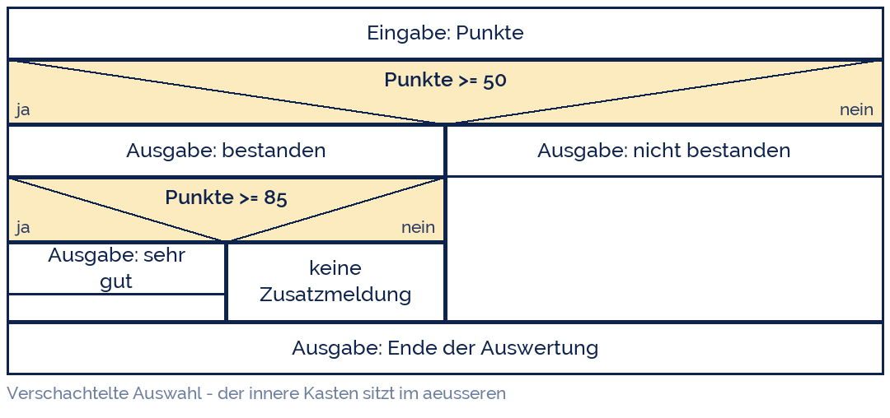
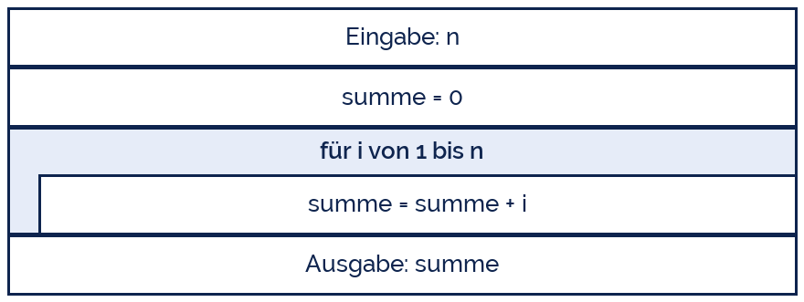
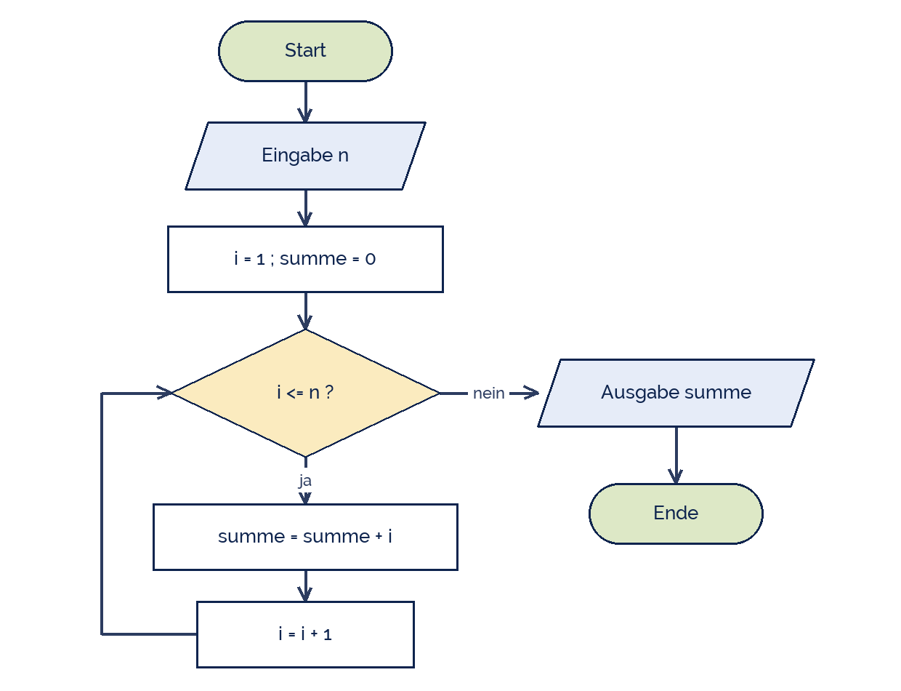
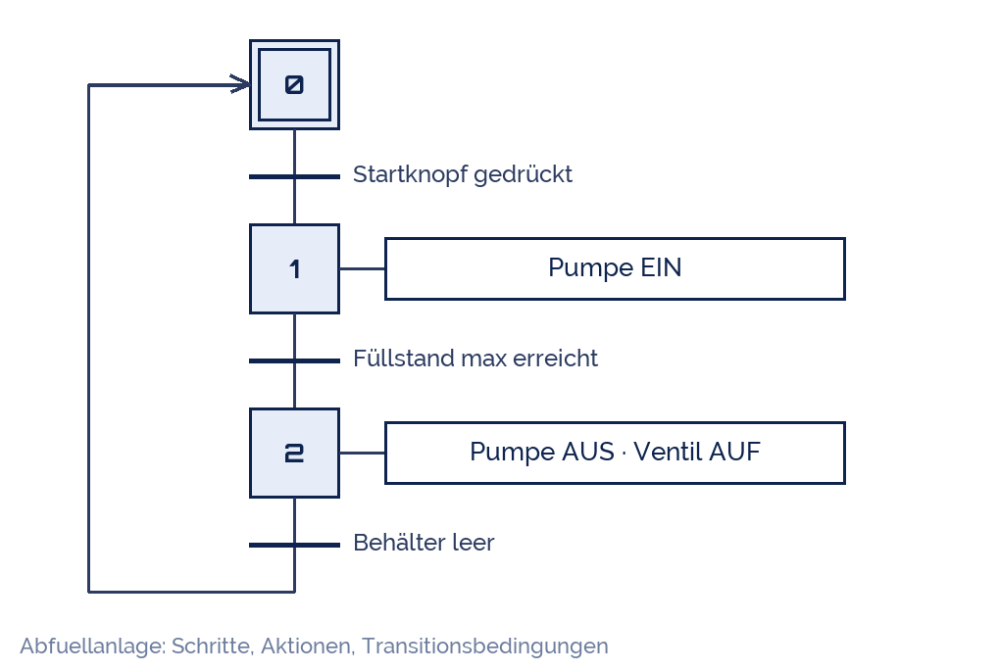

IndigoBunting
IndigoBunting
Good morning!
Nur das Schöne wird die Welt retten!
Fjodor Dostojewski
Nicht verzagen, Doc Alvers fragen!
Informatik — FOS 12
Programmstrukturen sichtbar machen
Struktogramm, Programmablaufplan und GRAFCET
Nicht verzagen, Doc Alvers fragen!
Kapitel 01
Warum zeichnen?
Der Plan entsteht vor der ersten Codezeile
Nicht verzagen, Doc Alvers fragen!
Erst denken, dann tippen
Ein Algorithmus in Prosa ist lang, mehrdeutig und schwer zu prüfen
Ein Diagramm zeigt den Ablauf auf einen Blick: Reihenfolge, Verzweigung, Wiederholung
Es ist sprachunabhängig — dasselbe Bild wird Python, Java oder eine SPS-Steuerung
Im Team ist es die gemeinsame Sprache zwischen Auftraggeber und Programmierer
Und in der Prüfung: lesen und zeichnen können ist Pflichtstoff
Nicht verzagen, Doc Alvers fragen!
Drei Notationen, drei Zwecke
| Notation | Norm / Herkunft | Stärke | typisch für |
|---|---|---|---|
| Struktogramm | Nassi-Shneiderman 1972, DIN 66261 | erzwingt saubere Struktur | Unterricht, Hochsprachen |
| Programmablaufplan | DIN 66001 | zeigt Sprünge und Wege | Übersicht, Fehlersuche |
| GRAFCET | DIN EN 60848 | Zustände über die Zeit | Steuerungen, Automatisierung |
Alle drei beschreiben denselben Algorithmus — nur mit anderem Blickwinkel
Faustregel: Struktogramm zum Entwerfen, PAP zum Erklären, GRAFCET zum Steuern
Nicht verzagen, Doc Alvers fragen!
Kapitel 02
Struktogramm
Ein Kasten, der nie aus dem Rahmen fällt
Nicht verzagen, Doc Alvers fragen!
Die drei Grundstrukturen im Struktogramm
| Struktur | Darstellung | bedeutet |
|---|---|---|
| Folge | Kästen untereinander | ein Schritt nach dem anderen |
| Auswahl | Kasten mit Dreieck, ja links / nein rechts | genau ein Zweig wird ausgeführt |
| Wiederholung | Rahmen links, Bedingung oben (oder unten) | der Inhalt läuft mehrfach |
Ein Struktogramm hat einen Eingang oben und einen Ausgang unten — keine Pfeile, keine Sprünge
Genau deshalb entsteht automatisch strukturierter Code ohne GOTO
Verschachteln heißt: ein Kasten sitzt innerhalb eines anderen
Nicht verzagen, Doc Alvers fragen!
Beispiel: Punkte auswerten

Die innere Auswahl liegt komplett im Ja-Zweig der äußeren
Der Kasten ganz unten läuft immer — er steht außerhalb der Auswahl
Nicht verzagen, Doc Alvers fragen!
Beispiel: Zahlen aufsummieren
Der Rahmen links zeigt: alles darin gehört zur Schleife
Die Bedingung steht oben — die Schleife prüft also vor jedem Durchlauf
Vor der Schleife wird initialisiert (summe = 0) — der klassische Anfängerfehler ist, das zu vergessen
Nach der Schleife steht das Ergebnis — ein Kasten außerhalb des Rahmens

Nicht verzagen, Doc Alvers fragen!
Kapitel 03
Programmablaufplan
Pfeile zeigen, wohin die Reise geht
Nicht verzagen, Doc Alvers fragen!
Die Symbole nach DIN 66001
| Symbol | Form | Bedeutung | Beispiel |
|---|---|---|---|
| Grenzstelle | Rechteck mit runden Enden | Anfang und Ende | Start / Ende |
| Ein-/Ausgabe | Parallelogramm | Daten kommen rein oder raus | Eingabe n |
| Operation | Rechteck | eine Anweisung | summe = summe + i |
| Verzweigung | Raute | eine Ja/Nein-Frage | i <= n ? |
| Ablauflinie | Pfeil | so geht es weiter | → |
Jede Raute hat genau zwei beschriftete Ausgänge: ja und nein
Pfeile dürfen zurückspringen — daraus entsteht die Schleife
Nicht verzagen, Doc Alvers fragen!
Derselbe Algorithmus als PAP
Es ist dieselbe Aufgabe wie im Struktogramm zuvor — nur anders gezeichnet
Die Schleife ist hier ein Pfeil nach oben, kein Rahmen
Der PAP zeigt den Weg, das Struktogramm die Struktur
Nachteil: Pfeile dürfen überallhin — man kann sich damit ein Chaos zeichnen

Nicht verzagen, Doc Alvers fragen!
Struktogramm oder PAP?
| Struktogramm | Programmablaufplan | |
|---|---|---|
| Sprünge | unmöglich | erlaubt — auch quer |
| Platzbedarf | kompakt | wird schnell groß |
| Ändern | mühsam (alles rutscht) | leicht (Pfeil umhängen) |
| Umsetzung in Code | fast Zeile für Zeile | erfordert Umdenken |
Wir entwerfen mit dem Struktogramm und zeichnen einen PAP, wenn wir erklären wollen
Beide sind in der Prüfung lesbar zu beherrschen
Nicht verzagen, Doc Alvers fragen!
Kapitel 04
GRAFCET
Wenn nicht gerechnet, sondern gesteuert wird
Nicht verzagen, Doc Alvers fragen!
Eine Anlage steuern
Schritt (Quadrat) = ein Zustand; der Doppelrahmen ist der Anfangsschritt
Rechts daneben steht die Aktion, die in diesem Zustand läuft
Der Querstrich ist eine Transition: erst wenn die Bedingung wahr ist, geht es weiter
Der Ablauf endet nie — er läuft im Kreis, wie eine echte Anlage

Nicht verzagen, Doc Alvers fragen!
Was GRAFCET anders macht
Es beschreibt Zustände über die Zeit, nicht die Berechnung eines Wertes
Mehrere Schritte dürfen gleichzeitig aktiv sein — parallele Zweige
Heimat: Automatisierungstechnik, Speicherprogrammierbare Steuerungen (SPS)
Für die Fachrichtung Technik ist es die Brücke zwischen Informatik und Anlagenbau
Normiert in DIN EN 60848, hervorgegangen aus dem französischen GRAFCET von 1977
Nicht verzagen, Doc Alvers fragen!
Fun Facts: Diagramme
Isaac Nassi und Ben Shneiderman erfanden das Struktogramm 1972 als Studenten — gegen den GOTO-Wildwuchs
Edsger Dijkstra schrieb 1968 den Brief „Go To Statement Considered Harmful“ — einer der berühmtesten Texte der Informatik
Der erste Flussplan stammt von Frank und Lillian Gilbreth, 1921 — für Arbeitsabläufe in Fabriken
Ben Shneiderman prägte später auch das Treemap-Diagramm — und war genervt von vollen Festplatten
Nicht verzagen, Doc Alvers fragen!
Struktogramm oder PAP zeichnen heißt: den Algorithmus verstehen, bevor die Programmiersprache mitredet.
Merksatz
Nicht verzagen, Doc Alvers fragen!
Eure Aufgabe: dieselbe Idee, drei Bilder
Algorithmus: Zahl raten — der Rechner denkt sich 1–100 aus, der Mensch rät, bis er richtig liegt
Zeichnet ihn als Struktogramm (Schleife mit Auswahl darin)
Zeichnet denselben Ablauf als PAP — achtet auf die Rücksprungpfeile
Vergleicht in der Gruppe: Welche Darstellung habt ihr schneller verstanden?
Zusatz für die Techniker: Eine Ampel als GRAFCET mit vier Schritten
Nicht verzagen, Doc Alvers fragen!